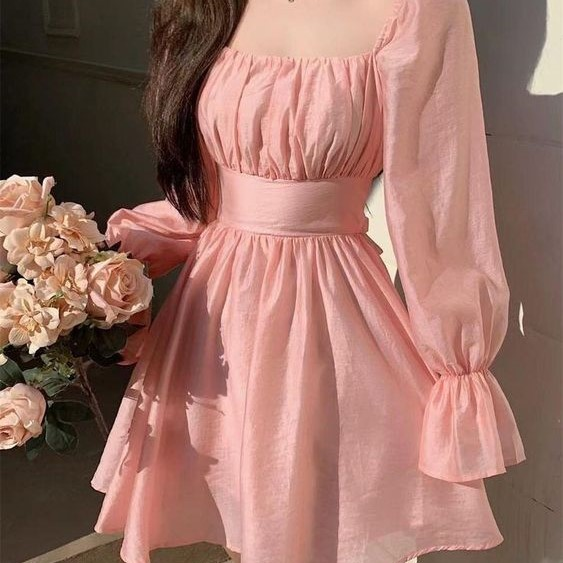
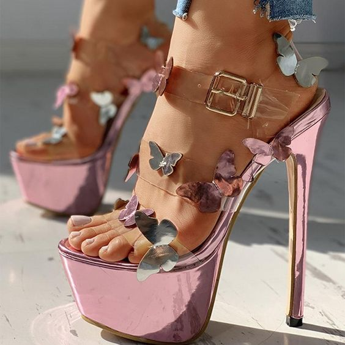
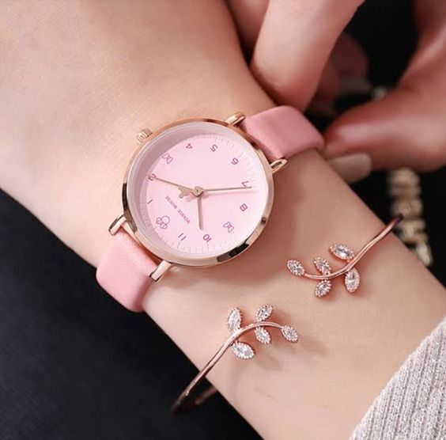
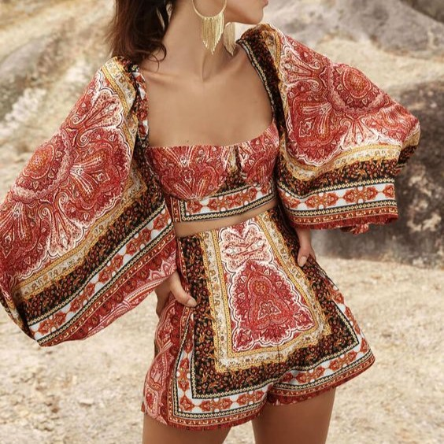
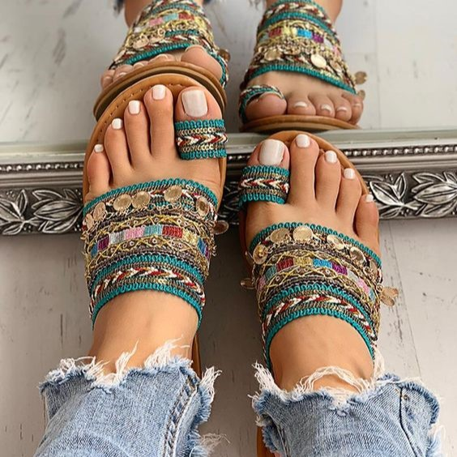
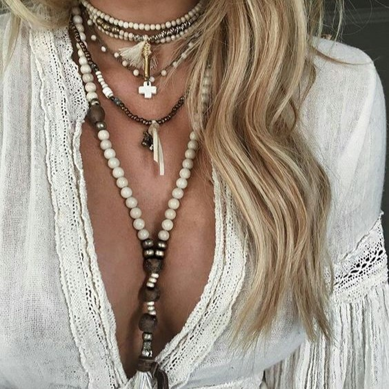
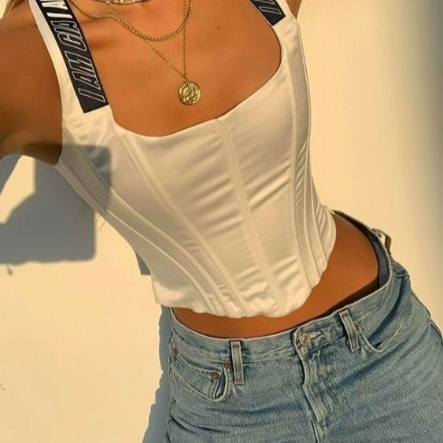
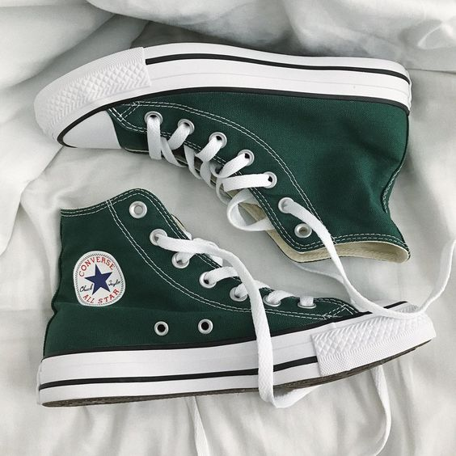
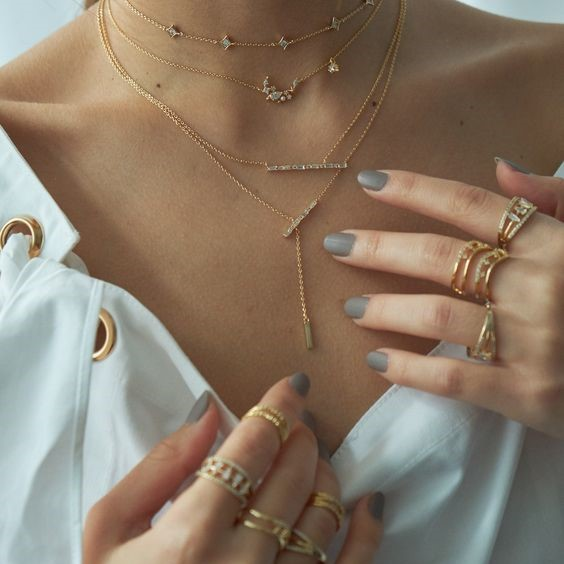

•Romanticizing ♡



Sparkling or transparent fabrics are both found in the top fashion styles.
This, chiffon and laces are what commonly used. But the dresses must not be screaming.
Romantic-style dresses can be called the golden ratio between ultra fashion and modest trends.
Romantic style heels can include Stiletto , which are commonly in trend.
Further more are Peep-toe Stiletto, Block Heels, Pump Heels and vallies.
The color combination should be in pastels and pinks . No bright or significant colors.
Accesories and Watches also goes with the theme. Simple pendants
and neutral color watches will go with every kind of Romanticizing style outfits.
Including bracelets and mini bags will also enhance the overall look completing it.
✻ Boho ✻



the boho style is all about freedom and a lack of strict conformity to current mainstream belief systems.You will not see something that
ties the whole thing together in bohemian style. Despite this lack of cohesion, all of the distinct pieces work together to create
breathtakingly gorgeous outfits. These individual pieces are also filled to the brim with earthy tones, inspired patterns, and natural
materials.attribute that guides the colors of boho style is the earthy aesthetic. You want your outfit to be colorful while
also looking grounded and earthy. Cream, brown, and light greens are your golden ticket to a fabulous boho-style outfit.
TrendᎩ∞



Trendy style includes silhouette with black pants can be baggy with a black loose sweatshirt. Black wide pants with an understated fit
combined with a turtleneck are topical. Tops generally in trend are Corset tops , Crop tops and Baggy tops . Jeans and tight skirts are
usually combined with these , tight fitted slit skirts , flared or bootcut jeans. Jwellery are minimal aur totally layered , simple pendants
and heavy rings are always in trend.